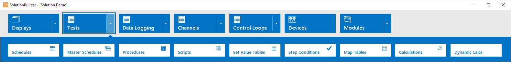
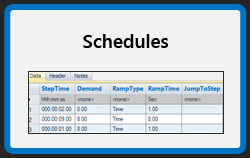
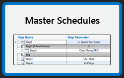

iTest User's Guide
In SolutionBuilder, you can set schedules, master schedules, procedures, and more that can be executed at runtime. You can access these editors by selecting Tests from SolutionBuilder's main menu.
Menu Options

Schedules are standard containers for structuring information such as engine specifications and test sequences. They are composed of tables where each row in the schedule is a step in the test. Schedules may contain loops, nested loops, conditional actions, step tasks, and other special behavior. For example, you can set up your schedule so that each step has a mode pair for the engine, a step time, dyno and throttle setpoints, and a number of step tasks. For more information, refer to the Managing Schedules documentation.
To access this editor, select Tests > Schedules or select the Schedules shortcut on the SolutionBuilder homepage.
Schedules Shortcut

The Master Schedules editor is used to create high-level sequences composed of schedules, procedures, and step tasks. You can use master schedules to create and run complex tests without using script or other programming methods. Master schedules include:
For more information, see the Master Schedule Panel and the Managing Master Schedules documentation.
To access this editor in SolutionBuilder, select Tests > Master Schedules from the main menu or select the Master Schedules shortcut on the main page.
Master Schedules Shortcut

Procedures are programming code or script used to run iTest applications. They are written in the VCL scripting language and can be executed from numerous sources including other procedures, actions, and virtual controls defined in displays. You can create new procedures and write procedure code in SolutionBuilder's Procedures editor. For more information, refer to the Managing Procedures documentation.
To access this editor, select Tests > Procedures in the main menu.
Python scripts can be managed using SolutionBuilder's Scripts editor. These scripts can be stored in the $SUPPORTDIR or the $SYSTEMDIR. For more information about how to manage python scripts in SolutionBuilder, refer to the Managing Scripts documentation.
To access this editor, select Tests > Scripts in the main menu.
Set value tables allow you to create a named sequence of values that change according to specified delay times and can be managed using SolutionBuilder's Set Value Tables editor. For more information, refer to the Managing Set Value Tables documentation.
To access this editor, select Tests > Set Value Tables in the main menu.
Step conditions can be managed using SolutionBuilder's Step Conditions editor. Step conditions created in this editor are reusable and can be referenced from multiple locations. For more information, refer to the Step Conditions documentation.
To access this editor, select Tests > Step Conditions in the main menu.
Map tables can be managed using SolutionBuilder's Map Tables editor. These tables can be used to linearly interpolate values in iTest. For more information, refer to the Managing Map Tables documentation.
To access this editor, select Tests > Map Tables in the main menu.
Calculations are a series of periodically calculated formulas. The calculated results are stored as channel values that can be logged, displayed, verified for limits and quality, and more. Calculations can be managed using SolutionBuilder’s Calculations editor. For more information, refer to the Managing Calculations documentation.
To access this editor, select Tests > Calculations from the main menu.
Dynamic calculations run independently and asynchronously to the real-time system, allowing you to perform modifications to the calculation file while it is actively running without affecting the test system. Dynamic calculations can be managed using SolutionBuilder's Dynamic Calculations editor. For more information, refer to the Managing Dynamic Calculations documentation.
To access this editor, select Tests > Dynamic Calculations from the main menu.